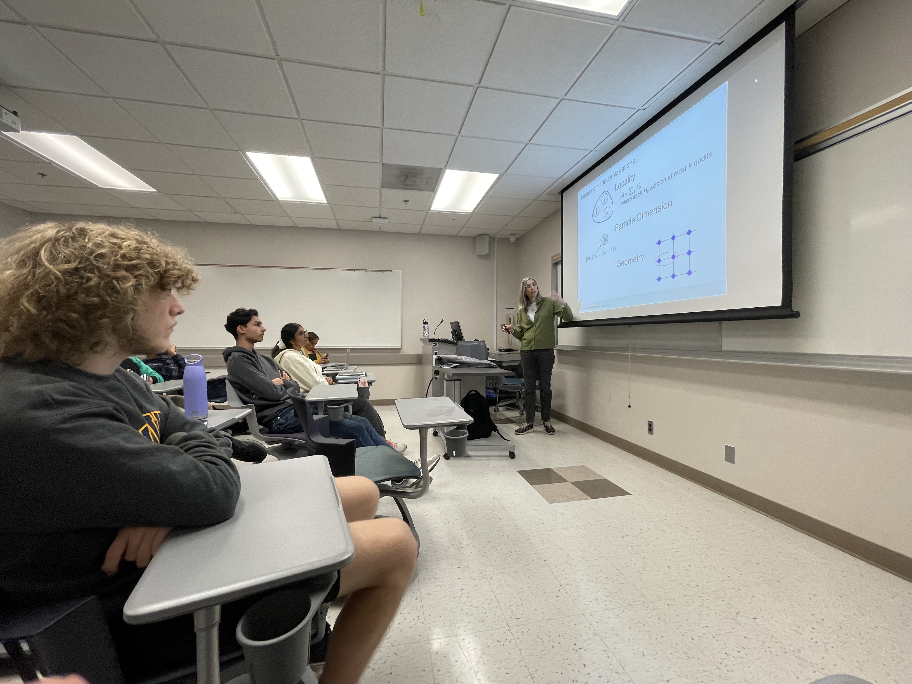

We welcomed Prof. Sandy Irani for a focused talk on how classical complexity intuitions extend—and sometimes fail—in the quantum world. Students packed the room to hear a candid tour through reductions, promise problems, and where quantum advantage might realistically surface.
During Q&A, Prof. Irani highlighted open questions that are both approachable for students and meaningful for the field. Many attendees left with new ideas for projects and reading groups.
After the session, the discussion continued in small groups. Several members have since spun up a weekly reading circle on quantum complexity basics and beyond.